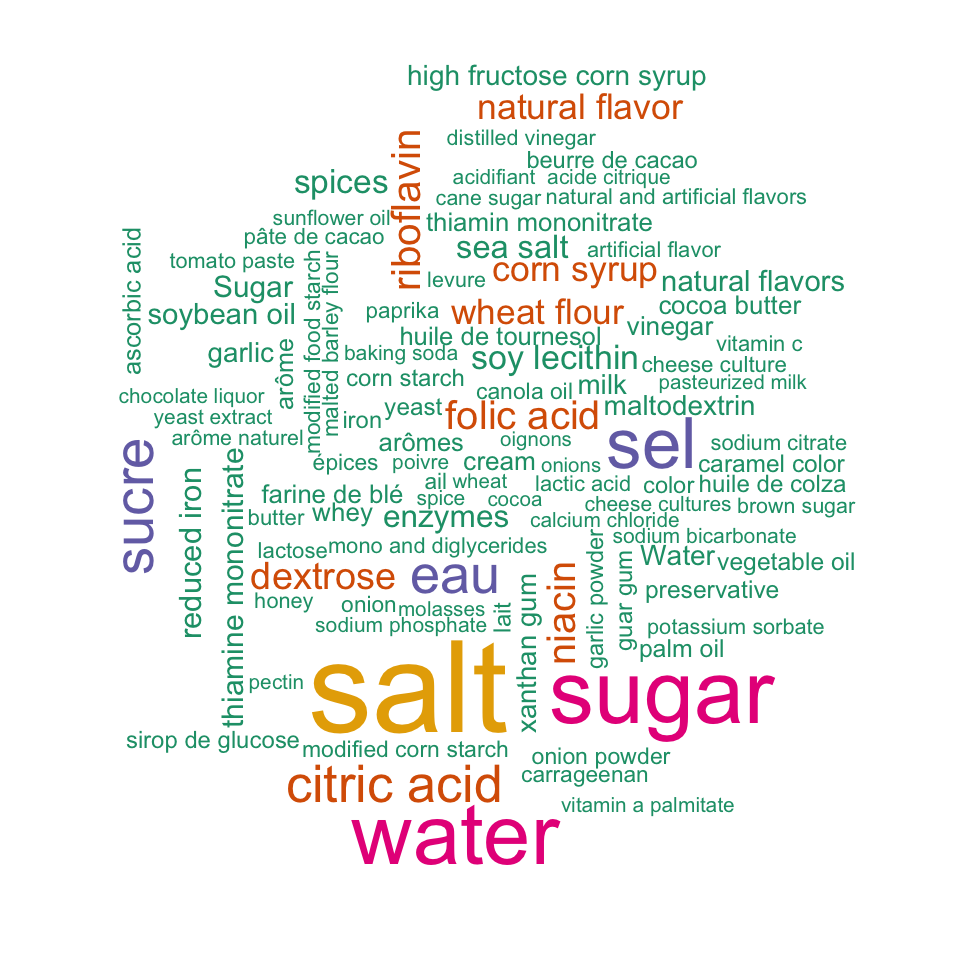
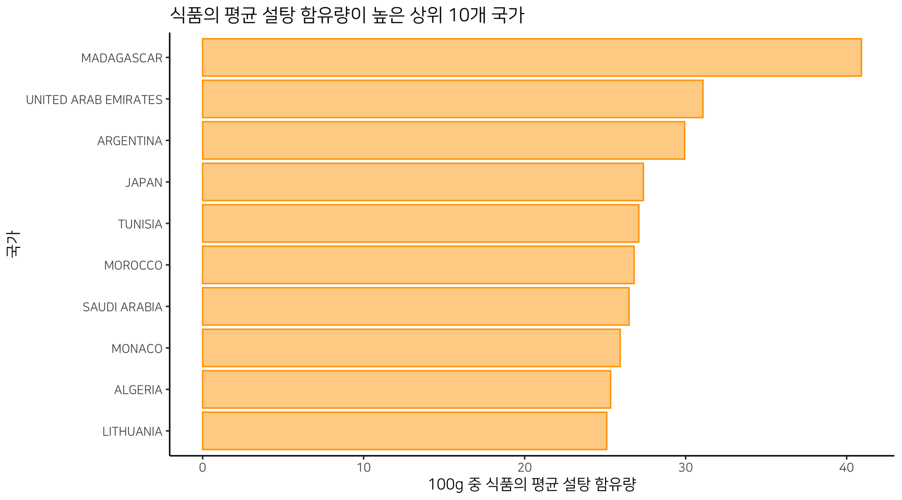
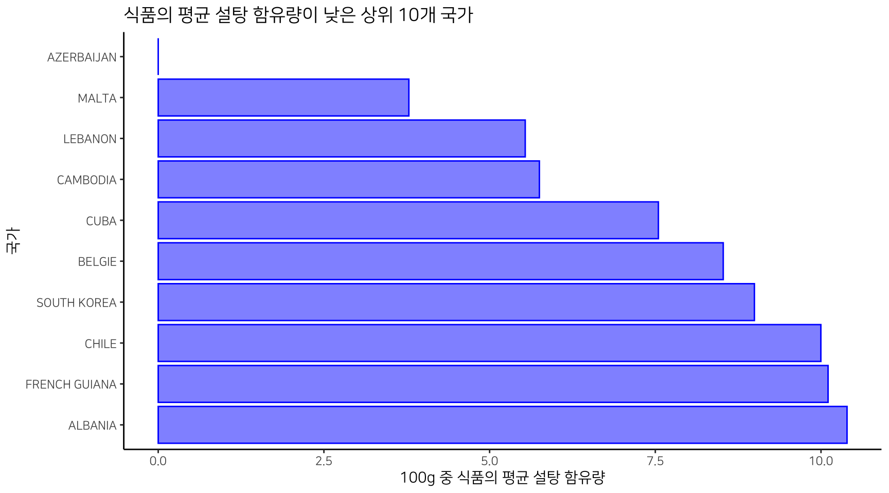
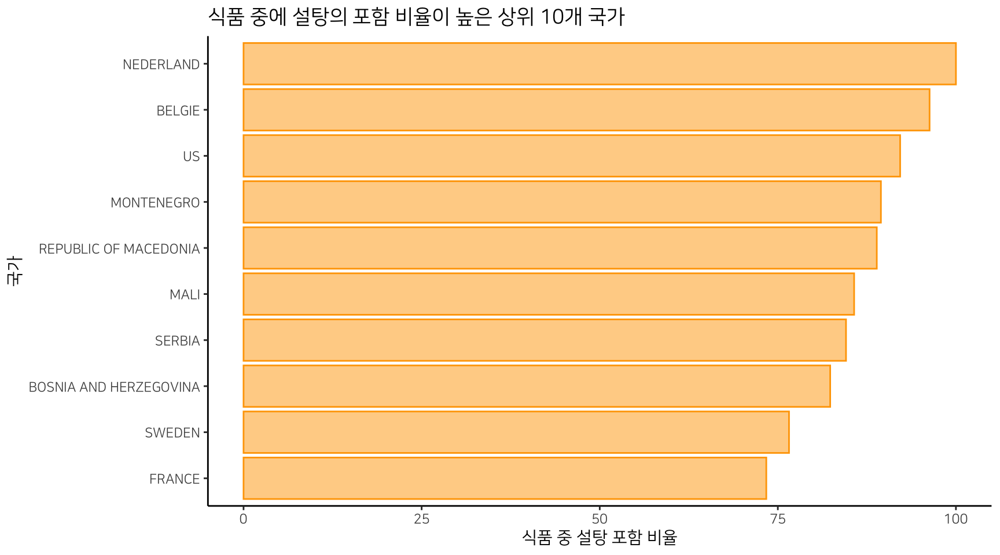
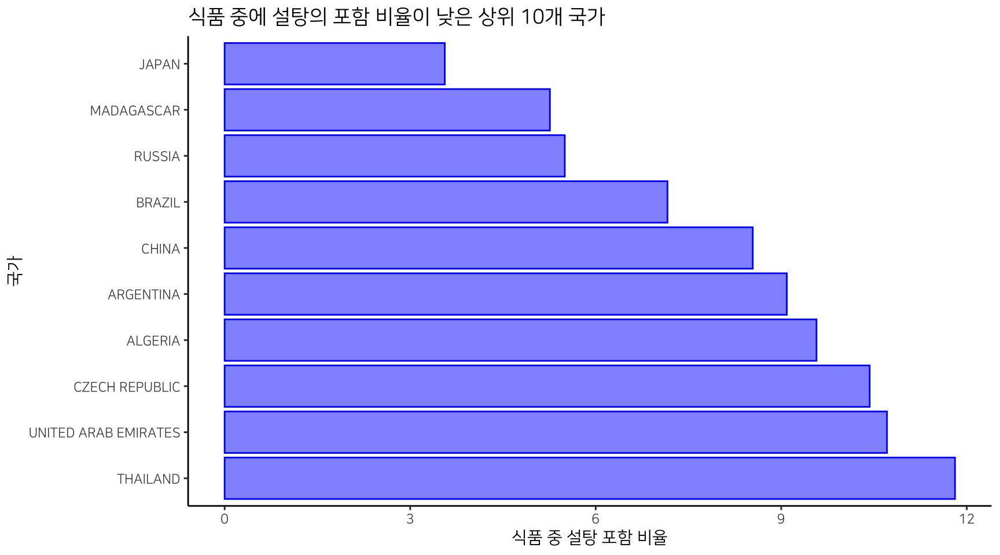

비정형 텍스트 데이터를 조작할 경우에 종종 발생하는 요건으로, character 벡터의 개별 원소를 특정 구분자로 나누어서 여러 개의 원소로 만들거나, 데이터 프레임에서 상속된 객체에서 특정 character 변수를 동일한 방법으로 나누어서 여러 관측치로 만들 필요성 있다.
비정형 텍스트 데이터를 조작할 경우에 종종 발생하는 요건으로,
character 벡터의 개별 원소를 특정 구분자로 나누어서여러 개의 원소로 만들거나, 데이터 프레임에서 상속된 객체에서 특정character 변수를 동일한 방법으로 나누어서여러 관측치로 만들 필요성있다. 텍스트 조작처럼 성가신 것이 없는데, 이들 두 요건에 대한 솔루션을 제시해 본다. 결국은dplyr패키지와tidyr패키지의 사용법에 대한 소개다.
https://www.kaggle.com/openfoodfacts/world-food-facts에서 world-food-facts.zip를 다운로드한 후 압축을 풀면 en.openfoodfacts.org.products.tsv라는 이름의 텍스트 파일을 얻을 수 있다. 이 파일은 컬럼의 구분자를 탭문자로 정의한 데이터 파일이다.
예제에서는 en.openfoodfacts.org.products.tsv를 FoodFacts.tsv라는 이름으로 변경 후 ./data 경로에 저장한 것을 전제로 수행한다.
이 데이터는 전 세계 식품의 영양 정보를 수집한 데이터로 Open Food Facts라는 단체에서 공개한 public 데이터다.
data_repo <- "./data"
fname <- paste(data_repo, "FoodFacts.tsv", sep ="/")
# 파일의 용량
file.size(fname) / 1024^2
[1] 963.456# 데이터를 R로 가져온다.
foodfact <- readr::read_tsv(fname, progress = FALSE)
# 메모리에 적재된 R 데이터의 용량
format(object.size(foodfact), units = "Mb")
[1] "942.2 Mb"# 차원
dim(foodfact)
[1] 356001 163# 변수의 이름
names(foodfact)
[1] "code"
[2] "url"
[3] "creator"
[4] "created_t"
[5] "created_datetime"
[6] "last_modified_t"
[7] "last_modified_datetime"
[8] "product_name"
[9] "generic_name"
[10] "quantity"
[11] "packaging"
[12] "packaging_tags"
[13] "brands"
[14] "brands_tags"
[15] "categories"
[16] "categories_tags"
[17] "categories_en"
[18] "origins"
[19] "origins_tags"
[20] "manufacturing_places"
[21] "manufacturing_places_tags"
[22] "labels"
[23] "labels_tags"
[24] "labels_en"
[25] "emb_codes"
[26] "emb_codes_tags"
[27] "first_packaging_code_geo"
[28] "cities"
[29] "cities_tags"
[30] "purchase_places"
[31] "stores"
[32] "countries"
[33] "countries_tags"
[34] "countries_en"
[35] "ingredients_text"
[36] "allergens"
[37] "allergens_en"
[38] "traces"
[39] "traces_tags"
[40] "traces_en"
[41] "serving_size"
[42] "no_nutriments"
[43] "additives_n"
[44] "additives"
[45] "additives_tags"
[46] "additives_en"
[47] "ingredients_from_palm_oil_n"
[48] "ingredients_from_palm_oil"
[49] "ingredients_from_palm_oil_tags"
[50] "ingredients_that_may_be_from_palm_oil_n"
[51] "ingredients_that_may_be_from_palm_oil"
[52] "ingredients_that_may_be_from_palm_oil_tags"
[53] "nutrition_grade_uk"
[54] "nutrition_grade_fr"
[55] "pnns_groups_1"
[56] "pnns_groups_2"
[57] "states"
[58] "states_tags"
[59] "states_en"
[60] "main_category"
[61] "main_category_en"
[62] "image_url"
[63] "image_small_url"
[64] "energy_100g"
[65] "energy-from-fat_100g"
[66] "fat_100g"
[67] "saturated-fat_100g"
[68] "-butyric-acid_100g"
[69] "-caproic-acid_100g"
[70] "-caprylic-acid_100g"
[71] "-capric-acid_100g"
[72] "-lauric-acid_100g"
[73] "-myristic-acid_100g"
[74] "-palmitic-acid_100g"
[75] "-stearic-acid_100g"
[76] "-arachidic-acid_100g"
[77] "-behenic-acid_100g"
[78] "-lignoceric-acid_100g"
[79] "-cerotic-acid_100g"
[80] "-montanic-acid_100g"
[81] "-melissic-acid_100g"
[82] "monounsaturated-fat_100g"
[83] "polyunsaturated-fat_100g"
[84] "omega-3-fat_100g"
[85] "-alpha-linolenic-acid_100g"
[86] "-eicosapentaenoic-acid_100g"
[87] "-docosahexaenoic-acid_100g"
[88] "omega-6-fat_100g"
[89] "-linoleic-acid_100g"
[90] "-arachidonic-acid_100g"
[91] "-gamma-linolenic-acid_100g"
[92] "-dihomo-gamma-linolenic-acid_100g"
[93] "omega-9-fat_100g"
[94] "-oleic-acid_100g"
[95] "-elaidic-acid_100g"
[96] "-gondoic-acid_100g"
[97] "-mead-acid_100g"
[98] "-erucic-acid_100g"
[99] "-nervonic-acid_100g"
[100] "trans-fat_100g"
[101] "cholesterol_100g"
[102] "carbohydrates_100g"
[103] "sugars_100g"
[104] "-sucrose_100g"
[105] "-glucose_100g"
[106] "-fructose_100g"
[107] "-lactose_100g"
[108] "-maltose_100g"
[109] "-maltodextrins_100g"
[110] "starch_100g"
[111] "polyols_100g"
[112] "fiber_100g"
[113] "proteins_100g"
[114] "casein_100g"
[115] "serum-proteins_100g"
[116] "nucleotides_100g"
[117] "salt_100g"
[118] "sodium_100g"
[119] "alcohol_100g"
[120] "vitamin-a_100g"
[121] "beta-carotene_100g"
[122] "vitamin-d_100g"
[123] "vitamin-e_100g"
[124] "vitamin-k_100g"
[125] "vitamin-c_100g"
[126] "vitamin-b1_100g"
[127] "vitamin-b2_100g"
[128] "vitamin-pp_100g"
[129] "vitamin-b6_100g"
[130] "vitamin-b9_100g"
[131] "folates_100g"
[132] "vitamin-b12_100g"
[133] "biotin_100g"
[134] "pantothenic-acid_100g"
[135] "silica_100g"
[136] "bicarbonate_100g"
[137] "potassium_100g"
[138] "chloride_100g"
[139] "calcium_100g"
[140] "phosphorus_100g"
[141] "iron_100g"
[142] "magnesium_100g"
[143] "zinc_100g"
[144] "copper_100g"
[145] "manganese_100g"
[146] "fluoride_100g"
[147] "selenium_100g"
[148] "chromium_100g"
[149] "molybdenum_100g"
[150] "iodine_100g"
[151] "caffeine_100g"
[152] "taurine_100g"
[153] "ph_100g"
[154] "fruits-vegetables-nuts_100g"
[155] "fruits-vegetables-nuts-estimate_100g"
[156] "collagen-meat-protein-ratio_100g"
[157] "cocoa_100g"
[158] "chlorophyl_100g"
[159] "carbon-footprint_100g"
[160] "nutrition-score-fr_100g"
[161] "nutrition-score-uk_100g"
[162] "glycemic-index_100g"
[163] "water-hardness_100g" 식품의 식자재 종류는 ingredients_text 변수에 텍스트로 들어 있다. 그래서 텍스트의 조작을 통해서 식자재를 분리해야 한다. 그러나 다음 예시처럼 일부 몇 건을 살펴보자. 하나의 ingredients_text에는 여러 개의 식자재들이 기술되어 있다.
exam <- foodfact$ingredients_text[c(2:3, 13)]
exam
[1] "Bananas, vegetable oil (coconut oil, corn oil and/or palm oil) sugar, natural banana flavor."
[2] "Peanuts, wheat flour, sugar, rice flour, tapioca starch, salt, leavening (ammonium bicarbonate, baking soda), soy sauce (water, soybeans, wheat, salt), potato starch."
[3] "Roasted peanuts (peanuts, peanut or canola oil, salt), sesame sticks (unbleached wheat flour, sesame seeds, sunflower oil, sa;t, beet powder, turmeric), chili crackers (rice, corn starch, soy sauce[water, soybeans, wheat, salt], brown rice syrup, paprika, onion powder, garlic powder), tamari roasted almonds (almonds, tamari shoyu [water, wheat, soybeans, salt]), salt"하나의 벡터에는 임의의 갯수의 식자재가 포함되어 있다. 그런데 자세히 보면 다음과 같은 몇 가지의 대표적인 구분자 패턴이 존재한다.
먼저 앞에서 찾은 식자재들의 분리 패턴을 이용해서, 여러 개의 식자재를 추출해 보자. 구분자로 분리된 수 많큼 원소의 개수가 늘어난다. 벡터의 길이가 3개에서 60으로 늘어났다. 중요한 것은 str_split() 함수는 분리된 개별 문자열의 결과를 리스트로 반환하기 때문에 unlist() 함수로 리스트를 벡터로 변경해 주어야 한는 것이다.
library(dplyr)
library(stringr)
foodfact %>%
.[c(2:3, 13), ] %>%
transmute(ingredients = str_split(ingredients_text, pattern = ",|\\(|\\)|\\[|\\]")) %>%
unlist()
ingredients1 ingredients2
"Bananas" " vegetable oil "
ingredients3 ingredients4
"coconut oil" " corn oil and/or palm oil"
ingredients5 ingredients6
" sugar" " natural banana flavor."
ingredients7 ingredients8
"Peanuts" " wheat flour"
ingredients9 ingredients10
" sugar" " rice flour"
ingredients11 ingredients12
" tapioca starch" " salt"
ingredients13 ingredients14
" leavening " "ammonium bicarbonate"
ingredients15 ingredients16
" baking soda" ""
ingredients17 ingredients18
" soy sauce " "water"
ingredients19 ingredients20
" soybeans" " wheat"
ingredients21 ingredients22
" salt" ""
ingredients23 ingredients24
" potato starch." "Roasted peanuts "
ingredients25 ingredients26
"peanuts" " peanut or canola oil"
ingredients27 ingredients28
" salt" ""
ingredients29 ingredients30
" sesame sticks " "unbleached wheat flour"
ingredients31 ingredients32
" sesame seeds" " sunflower oil"
ingredients33 ingredients34
" sa;t" " beet powder"
ingredients35 ingredients36
" turmeric" ""
ingredients37 ingredients38
" chili crackers " "rice"
ingredients39 ingredients40
" corn starch" " soy sauce"
ingredients41 ingredients42
"water" " soybeans"
ingredients43 ingredients44
" wheat" " salt"
ingredients45 ingredients46
"" " brown rice syrup"
ingredients47 ingredients48
" paprika" " onion powder"
ingredients49 ingredients50
" garlic powder" ""
ingredients51 ingredients52
" tamari roasted almonds " "almonds"
ingredients53 ingredients54
" tamari shoyu " "water"
ingredients55 ingredients56
" wheat" " soybeans"
ingredients57 ingredients58
" salt" ""
ingredients59 ingredients60
"" " salt" 앞의 결과는 길이가 60인 벡터를 반환한다. 그러나, 우리는 dplyr 패키지를 사용하기 위해서 tibble 패키지의 enframe() 함수를 사용해서 벡터를 tbl_df 객체로 변경할 수 있다.
foodfact %>%
.[c(2:3, 13), ] %>%
transmute(ingredients = str_split(ingredients_text, pattern = ",|\\(|\\)|\\[|\\]")) %>%
unlist() %>%
tibble::enframe() %>%
knitr::kable()
| name | value |
|---|---|
| ingredients1 | Bananas |
| ingredients2 | vegetable oil |
| ingredients3 | coconut oil |
| ingredients4 | corn oil and/or palm oil |
| ingredients5 | sugar |
| ingredients6 | natural banana flavor. |
| ingredients7 | Peanuts |
| ingredients8 | wheat flour |
| ingredients9 | sugar |
| ingredients10 | rice flour |
| ingredients11 | tapioca starch |
| ingredients12 | salt |
| ingredients13 | leavening |
| ingredients14 | ammonium bicarbonate |
| ingredients15 | baking soda |
| ingredients16 | |
| ingredients17 | soy sauce |
| ingredients18 | water |
| ingredients19 | soybeans |
| ingredients20 | wheat |
| ingredients21 | salt |
| ingredients22 | |
| ingredients23 | potato starch. |
| ingredients24 | Roasted peanuts |
| ingredients25 | peanuts |
| ingredients26 | peanut or canola oil |
| ingredients27 | salt |
| ingredients28 | |
| ingredients29 | sesame sticks |
| ingredients30 | unbleached wheat flour |
| ingredients31 | sesame seeds |
| ingredients32 | sunflower oil |
| ingredients33 | sa;t |
| ingredients34 | beet powder |
| ingredients35 | turmeric |
| ingredients36 | |
| ingredients37 | chili crackers |
| ingredients38 | rice |
| ingredients39 | corn starch |
| ingredients40 | soy sauce |
| ingredients41 | water |
| ingredients42 | soybeans |
| ingredients43 | wheat |
| ingredients44 | salt |
| ingredients45 | |
| ingredients46 | brown rice syrup |
| ingredients47 | paprika |
| ingredients48 | onion powder |
| ingredients49 | garlic powder |
| ingredients50 | |
| ingredients51 | tamari roasted almonds |
| ingredients52 | almonds |
| ingredients53 | tamari shoyu |
| ingredients54 | water |
| ingredients55 | wheat |
| ingredients56 | soybeans |
| ingredients57 | salt |
| ingredients58 | |
| ingredients59 | |
| ingredients60 | salt |
전체 데이터로 부수적인 텍스트 전처리를 수행한다. 식자재를 의미하지 않는 몇몇 텍스트의 패턴을 정규표현식을 이용해서 제거한다. 모든 의미 없는 텍스트를 제거하거나 보정하기에는 많은 시간과 노력이 필요하므로, 적당한 선에서 타협을 하였다.
다음 코드는 간단한 전처리 후 도출된 식자재의 돗수(frequency)를 구한다. 그리고 마지막으로 돗수가 큰 상위 100개의 식자재를 추출하였다. 상위에 랭크된 것들은 제대로 추출된 식자재의 이름이다. 아마도 상위 100개의 식자재 이름은 무리없이 사용할 수 있을 것이다.
# dplyr, tibble을 이용한 식자재의 추출
ingredients <- foodfact %>%
transmute(ingredients = str_split(ingredients_text, pattern = ",|\\(|\\)|\\[|\\]")) %>%
unlist() %>%
tibble::enframe() %>%
mutate(value = str_replace(value, "org|organic", ""),
value = str_replace(value, "and/or", ""),
value = str_replace(value, "-> en:\\w+", ""),
value = str_replace(value, "-> exists -- ok", ""),
value = str_replace(value, "-", " "),
value = str_replace_all(value, "[[:punct:]]", " "),
value = str_replace_all(value, " ", " "),
value = str_trim(value)) %>%
filter(value != "", !str_detect(value, "completed|\\d")) %>%
count(value) %>%
transmute(ingredient = value, freq = n) %>%
arrange(desc(freq))
# 도수가 큰 상위 100건 추출
top100 <- head(ingredients, 100)
top100 %>%
knitr::kable(format.args = list(big.mark = ','))
| ingredient | freq |
|---|---|
| salt | 99,466 |
| sugar | 65,631 |
| water | 61,163 |
| sel | 48,847 |
| sucre | 35,901 |
| eau | 33,960 |
| citric acid | 32,105 |
| riboflavin | 21,773 |
| folic acid | 21,237 |
| niacin | 21,237 |
| dextrose | 19,493 |
| natural flavor | 17,395 |
| corn syrup | 17,388 |
| wheat flour | 17,142 |
| soy lecithin | 16,009 |
| spices | 15,539 |
| sea salt | 14,724 |
| enzymes | 13,850 |
| reduced iron | 13,261 |
| thiamine mononitrate | 12,486 |
| Sugar | 12,343 |
| soybean oil | 11,894 |
| natural flavors | 11,775 |
| Water | 10,751 |
| high fructose corn syrup | 10,717 |
| maltodextrin | 10,555 |
| milk | 10,471 |
| garlic | 10,470 |
| xanthan gum | 10,337 |
| vinegar | 9,180 |
| cream | 9,060 |
| whey | 8,829 |
| cocoa butter | 8,817 |
| thiamin mononitrate | 8,762 |
| farine de blé | 8,702 |
| huile de tournesol | 8,560 |
| arômes | 8,489 |
| ascorbic acid | 8,343 |
| arôme | 8,076 |
| palm oil | 7,862 |
| preservative | 7,692 |
| vegetable oil | 7,673 |
| caramel color | 7,535 |
| yeast | 7,341 |
| huile de colza | 7,249 |
| guar gum | 7,119 |
| corn starch | 7,115 |
| sirop de glucose | 7,039 |
| lait | 7,008 |
| iron | 6,895 |
| beurre de cacao | 6,883 |
| garlic powder | 6,764 |
| color | 6,740 |
| onion powder | 6,319 |
| modified corn starch | 6,193 |
| canola oil | 6,144 |
| épices | 6,066 |
| carrageenan | 5,991 |
| modified food starch | 5,991 |
| onion | 5,948 |
| ail | 5,923 |
| malted barley flour | 5,875 |
| pâte de cacao | 5,740 |
| paprika | 5,722 |
| cheese culture | 5,643 |
| butter | 5,496 |
| lactose | 5,451 |
| natural and artificial flavors | 5,317 |
| vitamin c | 5,317 |
| mono and diglycerides | 5,295 |
| sodium citrate | 5,291 |
| lactic acid | 5,241 |
| artificial flavor | 5,221 |
| honey | 5,138 |
| potassium sorbate | 5,099 |
| tomato paste | 5,065 |
| distilled vinegar | 4,991 |
| levure | 4,952 |
| arôme naturel | 4,846 |
| brown sugar | 4,844 |
| cane sugar | 4,725 |
| sunflower oil | 4,641 |
| baking soda | 4,591 |
| sodium bicarbonate | 4,538 |
| sodium phosphate | 4,483 |
| cheese cultures | 4,467 |
| spice | 4,460 |
| acidifiant acide citrique | 4,402 |
| yeast extract | 4,383 |
| poivre | 4,345 |
| calcium chloride | 4,329 |
| vitamin a palmitate | 4,315 |
| chocolate liquor | 4,287 |
| pectin | 4,240 |
| molasses | 4,178 |
| cocoa | 4,045 |
| pasteurized milk | 4,001 |
| wheat | 3,994 |
| oignons | 3,981 |
| onions | 3,940 |
하위 10건을 살펴보니, 한자와 일본어가 포함되어 있다. 달걀과 식용색소인 황색5호도 눈에 띈다.
| ingredient | freq |
|---|---|
| 食用黃梔子色素 | 1 |
| 香料 カラメル色素 | 1 |
| 高分岐環狀糊精 | 1 |
| 高果糖糖漿 | 1 |
| 高梁 | 1 |
| 鶏卵 | 1 |
| 鹿角菜膠 | 1 |
| 麦芽エキス | 1 |
| 黃色五號 | 1 |
| 黑醋粉 | 1 |
wordcloud앞서 구한 상위 100개의 식재료로 wordcloud 플롯을 그려본다. 식품에 소금, 설탕, 물이 가장 많이 사용되는 식재료임을 쉽게 알 수 있는 플롯이다.
par(mar = c(0, 0, 0, 0))
# 팔레트 정의
pal <- RColorBrewer::brewer.pal(6, "Dark2")
# 워드클라우드 생성
wordcloud::wordcloud(top100$ingredient, top100$freq, colors = pal)

앞서 다룬 식자재 데이터는 일차원 데이터다. 그런데 이차원 이상의 데이터는 결국 하나의 레코드(관측치, Observations)를 여러 레코드로 분리하는 방법으로 데이터를 조작해야 한다.
다음의 시나리오를 적용해 본다.
countries_en 변수는 식품의 국가명을 영문으로 표현한 변수다.
_100g로 끝나는 변수들은 100g 당 해당 영양소의 포함 중량이다.categories_en에서 고기가 포함된 식품을 추출해 본다.labels에서 채식 식품을 추출해 본다.국가명은 여러 국가의 언어로 표현되어 있다. 그래서 이들을 영문으로 변경하는 clean_country라는 이름의 함수를 정의하였다. 이 함수는 국가의 이름을 영문 대문자로 변경해 준다.
# 국가명 보정 사용자 정의 함수
clean_country <- function(x) {
library(magrittr)
x %>%
stringr::str_to_upper() %>%
stringr::str_replace("UNITED STATES|EN:US", "US") %>%
stringr::str_replace("UNITED KINGDOM|EN:GB|FR:GRANDE-BRETAGNE", "UK") %>%
stringr::str_replace("FR:REINO-UNIDO|FR:ANGLETERRE|المملكة-المتحدة", "UK") %>%
stringr::str_replace("FR:SCOTLAND", "SCOTLAND") %>%
stringr::str_replace("FR:DEUTSCHLAND|FR:ALEMANIA|NL:DEUTSCHLAND", "GERMANY") %>%
stringr::str_replace("EN:FR|FR:ФРАНЦИЯ|FR:FRANKRIJK|FR:FRANKREICH", "FRANCE") %>%
stringr::str_replace("FR:MARSEILLE-5|FR:PUYRICARD|NL:FRANKREICH", "FRANCE") %>%
stringr::str_replace("FR:BOURGOGNE-AUBE-NOGENT-SUR-SEINE|RÉUNION", "FRANCE") %>%
stringr::str_replace("HOLLAND|FR:NEDERLAND", "NETHERLANDS") %>%
stringr::str_replace("FR:GRIEKENLAND", "GREECE") %>%
stringr::str_replace("FR:IRLAND", "IRELAND") %>%
stringr::str_replace("EN:CN|FR:QUEBEC", "CANADA") %>%
stringr::str_replace("EN:AU", "AUSTRALIA") %>%
stringr::str_replace("EN:ES|ESPAÑA|FR:SPANJE|FR:SPANIEN", "SPAIN") %>%
stringr::str_replace("CÔTE D'IVOIRE", "IVORY COAST") %>%
stringr::str_replace("FR:MAURICIO", "MAURITIUS") %>%
stringr::str_replace("FR:SCHWEIZ|NL:SCHWEIZ", "SWITZERLAND") %>%
stringr::str_replace("FR:BELGIQU|NL:BELGIEN", "BELGIUM") %>%
stringr::str_replace("XX:DANEMARK", "DENMARK") %>%
stringr::str_replace("OTHER-TURQUIE", "TURKEY") %>%
stringr::str_replace("OTHER-JAPON|OTHER-日本", "JAPAN") %>%
stringr::str_replace("日本", "JAPAN") %>%
stringr::str_replace("السعودية", "SAUDI ARABIA") %>%
stringr::str_replace("سلطنة-عمان", "OMAN") %>%
stringr::str_replace("العراق", "IRAQ") %>%
stringr::str_replace("العراق", "IRAQ") %>%
stringr::str_replace("中华人民共和国|香港", "CHINA") %>%
stringr::str_replace("ព្រះរាជាណាចក្រកម្ពុជា", "CAMBODIA")
}
벡터를 컴마 구분자로 분리하여 리스트로 만든 후 벡터로 변경한다.
# 원래의 데이터 건수
nrow(foodfact)
[1] 356001# 국가명 추출
countries <- foodfact %>%
mutate(countries_clean = clean_country(countries_en)) %>%
select(countries_clean) %>%
pull() %>%
stringr::str_split(",") %>%
unlist
# 추출된 국가의 건수
length(countries)
[1] 363850# 상위 10개의 국가
countries %>%
table() %>%
sort(decreasing = TRUE) %>%
head(n = 10) %>%
knitr::kable(format.args = list(big.mark = ','))
| . | Freq |
|---|---|
| US | 173,708 |
| FRANCE | 129,624 |
| SWITZERLAND | 17,210 |
| GERMANY | 9,454 |
| SPAIN | 6,064 |
| UK | 5,991 |
| BELGIUM | 4,092 |
| AUSTRALIA | 2,319 |
| RUSSIA | 1,641 |
| ITALY | 1,632 |
예시로 데이터 프레임을 생성한다. 컴마로 여러 단어를 묶은 city 변수를 주목하자.
# 예제 데이터프레임
exam <- data.frame(city = c("서울", "부산,인천,광주", "강원,경기"),
falg = c("특별시", "광역시", "시도"),
num = c(234, 123, 53))
exam %>%
knitr::kable()
| city | falg | num |
|---|---|---|
| 서울 | 특별시 | 234 |
| 부산,인천,광주 | 광역시 | 123 |
| 강원,경기 | 시도 | 53 |
city 변수를 컴마를 기준으로 분리해서 new_city 변수를 생성한다. 이 변수는 stringr::str_split의 결과인 리스트 객체를 포함하는 변수다.
# 컴마로 분리 후 new_city 변수 생성
exam %>%
mutate(new_city = stringr::str_split(city, ",")) %>%
select(-city) %>%
knitr::kable()
| falg | num | new_city |
|---|---|---|
| 특별시 | 234 | 서울 |
| 광역시 | 123 | 부산, 인천, 광주 |
| 시도 | 53 | 강원, 경기 |
new_city 변수의 개별 리스트의 성분별로 레코드를 만들어 주기 위해서 tidyr 패키지의 unnest() 함수를 사용한다. 이제 비로소 도시별로 관측치가 만들어졌다.
# 최종 결과
exam %>%
mutate(new_city = stringr::str_split(city, ",")) %>%
select(-city) %>%
tidyr::unnest(new_city) %>%
knitr::kable()
| falg | num | new_city |
|---|---|---|
| 특별시 | 234 | 서울 |
| 광역시 | 123 | 부산 |
| 광역시 | 123 | 인천 |
| 광역시 | 123 | 광주 |
| 시도 | 53 | 강원 |
| 시도 | 53 | 경기 |
foodfact를 개별 국가별로 레코드를 분리하면서 몇 개의 관심있는 변수를 추출하고, 파생한다.
# 국가별 관심 지표의 추출
countries_additives <- foodfact %>%
mutate(meat_flag = stringr::str_detect(categories_en, "meat|Meat"),
vegan_flag = stringr::str_detect(labels, "vegan|Vegan")) %>%
mutate(countries_clean = clean_country(countries_en)) %>%
select(countries_clean, energy_100g, sugars_100g, salt_100g,
alcohol_100g, sodium_100g, cholesterol_100g,
meat_flag, vegan_flag) %>%
mutate(countries = stringr::str_split(countries_clean, ",")) %>%
select(-countries_clean) %>%
tidyr::unnest(countries)
head(countries_additives) %>%
as.data.frame() %>%
knitr::kable(format.args = list(big.mark = ','))
| energy_100g | sugars_100g | salt_100g | alcohol_100g | sodium_100g | cholesterol_100g | meat_flag | vegan_flag | countries |
|---|---|---|---|---|---|---|---|---|
| NA | NA | NA | NA | NA | NA | NA | NA | FRANCE |
| 2,243 | 14.29 | 0.00000 | NA | 0.000 | 0.018 | NA | NA | US |
| 1,941 | 17.86 | 0.63500 | NA | 0.250 | 0.000 | NA | NA | US |
| 2,540 | 3.57 | 1.22428 | NA | 0.482 | NA | NA | NA | US |
| 1,552 | NA | NA | NA | NA | NA | NA | NA | US |
| 1,933 | 11.54 | NA | NA | NA | NA | NA | NA | US |
우여곡절로 만든 데이터 셋을 이용해서 몇 가지 분석을 수행해 보자.
국가별 식품에 설탕 함량이 높은 국가는 다음과 같다. 건수가 적은 국가의 경우에는 Outlier에 영향을 받는 등 대표성을 띠지 못하기 때문에 5개 이상 설탕이 함유된 식품이 있는 국가만 대상으로 삼았다.
# 국가별 설탕 관련 지표의 생성
sugar <- countries_additives %>%
group_by(countries) %>%
summarise(sugar_mean = mean(sugars_100g, na.rm = TRUE),
freq_food = n(),
freq_sugar = sum(!is.na(sugars_100g)),
sugar_percn = round(freq_sugar / freq_food * 100, 2)) %>%
filter(freq_sugar > 5) %>%
arrange(desc(sugar_mean))
sugar %>%
knitr::kable(format.args = list(big.mark = ','))
| countries | sugar_mean | freq_food | freq_sugar | sugar_percn |
|---|---|---|---|---|
| MADAGASCAR | 40.916667 | 114 | 6 | 5.26 |
| UNITED ARAB EMIRATES | 31.077778 | 84 | 9 | 10.71 |
| ARGENTINA | 29.938333 | 66 | 6 | 9.09 |
| JAPAN | 27.373846 | 365 | 13 | 3.56 |
| TUNISIA | 27.092414 | 159 | 29 | 18.24 |
| MOROCCO | 26.799167 | 208 | 36 | 17.31 |
| SAUDI ARABIA | 26.486957 | 117 | 23 | 19.66 |
| MONACO | 25.933333 | 14 | 9 | 64.29 |
| ALGERIA | 25.338889 | 188 | 18 | 9.57 |
| LITHUANIA | 25.100000 | 20 | 8 | 40.00 |
| BULGARIA | 25.005714 | 66 | 14 | 21.21 |
| MONTENEGRO | 24.622353 | 19 | 17 | 89.47 |
| COLOMBIA | 24.451875 | 44 | 16 | 36.36 |
| FINLAND | 23.461111 | 49 | 18 | 36.73 |
| CHINA | 23.037235 | 199 | 17 | 8.54 |
| CZECH REPUBLIC | 22.945652 | 441 | 46 | 10.43 |
| BRAZIL | 22.404615 | 363 | 26 | 7.16 |
| TURKEY | 19.653158 | 49 | 19 | 38.78 |
| RUSSIA | 19.523095 | 1,637 | 90 | 5.50 |
| NEW ZEALAND | 19.241333 | 116 | 75 | 64.66 |
| FRENCH POLYNESIA | 19.018077 | 86 | 26 | 30.23 |
| NEDERLAND | 18.807143 | 7 | 7 | 100.00 |
| NETHERLANDS | 18.796199 | 804 | 392 | 48.76 |
| DENMARK | 18.124776 | 435 | 201 | 46.21 |
| CANADA | 17.701837 | 1,029 | 280 | 27.21 |
| BOSNIA AND HERZEGOVINA | 17.335714 | 17 | 14 | 82.35 |
| NEW CALEDONIA | 17.329167 | 108 | 24 | 22.22 |
| MARTINIQUE | 17.258139 | 120 | 43 | 35.83 |
| SLOVENIA | 17.209091 | 46 | 22 | 47.83 |
| POLAND | 17.199130 | 227 | 69 | 30.40 |
| US | 17.109738 | 132,765 | 122,367 | 92.17 |
| NA | 16.765593 | 267 | 59 | 22.10 |
| MALI | 16.533333 | 7 | 6 | 85.71 |
| SINGAPORE | 16.430000 | 57 | 10 | 17.54 |
| SENEGAL | 16.363000 | 52 | 10 | 19.23 |
| BELGIUM | 15.734168 | 4,082 | 1,633 | 40.00 |
| SLOVAKIA | 15.720000 | 34 | 10 | 29.41 |
| SWITZERLAND | 15.718281 | 17,191 | 11,896 | 69.20 |
| AUSTRALIA | 15.301966 | 2,309 | 610 | 26.42 |
| UK | 15.102567 | 5,863 | 2,192 | 37.39 |
| IRELAND | 15.102544 | 221 | 68 | 30.77 |
| ROMANIA | 15.093158 | 266 | 95 | 35.71 |
| GERMANY | 14.885447 | 9,439 | 5,777 | 61.20 |
| SERBIA | 14.664797 | 350 | 296 | 84.57 |
| LUXEMBOURG | 14.616463 | 232 | 82 | 35.34 |
| PORTUGAL | 14.407170 | 919 | 516 | 56.15 |
| NORWAY | 14.382727 | 133 | 55 | 41.35 |
| REPUBLIC OF MACEDONIA | 14.062500 | 9 | 8 | 88.89 |
| GUADELOUPE | 13.917464 | 240 | 138 | 57.50 |
| ITALY | 13.883119 | 1,630 | 545 | 33.44 |
| ANDORRA | 13.817500 | 17 | 8 | 47.06 |
| FRANCE | 13.418091 | 129,221 | 94,819 | 73.38 |
| SAINT PIERRE AND MIQUELON | 13.390000 | 40 | 22 | 55.00 |
| SWEDEN | 13.303786 | 414 | 317 | 76.57 |
| HUNGARY | 13.023129 | 327 | 179 | 54.74 |
| SOUTH AFRICA | 12.914667 | 42 | 15 | 35.71 |
| TAIWAN | 12.705714 | 170 | 28 | 16.47 |
| SPAIN | 12.680907 | 6,043 | 3,128 | 51.76 |
| GREECE | 12.430750 | 106 | 40 | 37.74 |
| EUROPEAN UNION | 12.356111 | 48 | 18 | 37.50 |
| AUSTRIA | 12.314074 | 471 | 135 | 28.66 |
| MEXICO | 12.012467 | 172 | 92 | 53.49 |
| HONG KONG | 11.557895 | 157 | 38 | 24.20 |
| SCOTLAND | 11.190909 | 20 | 11 | 55.00 |
| CROATIA | 11.058889 | 29 | 18 | 62.07 |
| THAILAND | 10.873667 | 254 | 30 | 11.81 |
| INDIA | 10.483333 | 92 | 12 | 13.04 |
| ALBANIA | 10.392857 | 13 | 7 | 53.85 |
| FRENCH GUIANA | 10.106609 | 104 | 64 | 61.54 |
| CHILE | 9.997826 | 119 | 23 | 19.33 |
| SOUTH KOREA | 8.995000 | 41 | 6 | 14.63 |
| BELGIE | 8.525000 | 27 | 26 | 96.30 |
| CUBA | 7.546667 | 11 | 6 | 54.55 |
| CAMBODIA | 5.751111 | 44 | 9 | 20.45 |
| LEBANON | 5.537500 | 42 | 8 | 19.05 |
| MALTA | 3.781818 | 21 | 11 | 52.38 |
| AZERBAIJAN | 0.000000 | 19 | 12 | 63.16 |
시각화를 통해서 국가별 식품에 설탕 함량이 높은 국가에 대한 이해를 더 쉽게 할 수 있다.
마다가스카르, 아랍 에미레이트, 아르헨티나의 식품에는 평균적으로 많은 설탕이 함유됨을 알 수 있다. 마다가스카르는 독보적이다.
library(ggplot2)
# 테마와 한글 폰트 설정
theme_set(theme_classic(base_family='NanumSquare'))
sugar %>%
arrange(desc(sugar_mean)) %>%
head(10) %>%
mutate(order_seq = 10:1) %>%
ggplot(aes(x = reorder(countries, order_seq), y = sugar_mean )) +
geom_bar(fill = "orange", colour = "orange", alpha = .5, stat = 'identity') +
scale_y_continuous(name = "100g 중 식품의 평균 설탕 함유량") +
xlab("국가") +
ggtitle("식품의 평균 설탕 함유량이 높은 상위 10개 국가") +
coord_flip()

식품 중에 설탕 함량이 낮은 국가는 아제르바이잔, 몰타, 레바논, 캄보디아 등이다.
| countries | sugar_mean | freq_food | freq_sugar | sugar_percn |
|---|---|---|---|---|
| AZERBAIJAN | 0.000000 | 19 | 12 | 63.16 |
| MALTA | 3.781818 | 21 | 11 | 52.38 |
| LEBANON | 5.537500 | 42 | 8 | 19.05 |
| CAMBODIA | 5.751111 | 44 | 9 | 20.45 |
| CUBA | 7.546667 | 11 | 6 | 54.55 |
| BELGIE | 8.525000 | 27 | 26 | 96.30 |
| SOUTH KOREA | 8.995000 | 41 | 6 | 14.63 |
| CHILE | 9.997826 | 119 | 23 | 19.33 |
| FRENCH GUIANA | 10.106609 | 104 | 64 | 61.54 |
| ALBANIA | 10.392857 | 13 | 7 | 53.85 |
sugar %>%
arrange(sugar_mean) %>%
head(10) %>%
mutate(order_seq = 10:1) %>%
ggplot(aes(x = reorder(countries, order_seq), y = sugar_mean )) +
geom_bar(fill = "blue", colour = "blue", alpha = .5, stat = 'identity') +
scale_y_continuous(name = "100g 중 식품의 평균 설탕 함유량") +
xlab("국가") +
ggtitle("식품의 평균 설탕 함유량이 낮은 상위 10개 국가") +
coord_flip()

식품 중에 설탕이 포함된 비율이 높은 국가는 네덜란드, 벨기에, 미국 등이다. 네덜란드는 모든 식품에 설탕이 함유되어 있음을 알 수 있다.
sugar %>%
arrange(desc(sugar_percn)) %>%
head(10) %>%
knitr::kable(format.args = list(big.mark = ','))
| countries | sugar_mean | freq_food | freq_sugar | sugar_percn |
|---|---|---|---|---|
| NEDERLAND | 18.80714 | 7 | 7 | 100.00 |
| BELGIE | 8.52500 | 27 | 26 | 96.30 |
| US | 17.10974 | 132,765 | 122,367 | 92.17 |
| MONTENEGRO | 24.62235 | 19 | 17 | 89.47 |
| REPUBLIC OF MACEDONIA | 14.06250 | 9 | 8 | 88.89 |
| MALI | 16.53333 | 7 | 6 | 85.71 |
| SERBIA | 14.66480 | 350 | 296 | 84.57 |
| BOSNIA AND HERZEGOVINA | 17.33571 | 17 | 14 | 82.35 |
| SWEDEN | 13.30379 | 414 | 317 | 76.57 |
| FRANCE | 13.41809 | 129,221 | 94,819 | 73.38 |
sugar %>%
arrange(desc(sugar_percn)) %>%
head(10) %>%
mutate(order_seq = 10:1) %>%
ggplot(aes(x = reorder(countries, order_seq), y = sugar_percn )) +
geom_bar(fill = "orange", colour = "orange", alpha = .5, stat = 'identity') +
scale_y_continuous(name = "식품 중 설탕 포함 비율") +
xlab("국가") +
ggtitle("식품 중에 설탕의 포함 비율이 높은 상위 10개 국가") +
coord_flip()

식품 중에 설탕이 포함된 비율이 낮은 국가는 일본, 마다가스카르, 러시아 등이다. 특히 마다가스카르는 앞에서 식품 중에 설탕의 함량이 높은 국가였다. 식품에 설탕이 들어가는 음식은 적지만, 설탕이 들어가는 식품의 설탕 함유량은 높은 국가다.
| countries | sugar_mean | freq_food | freq_sugar | sugar_percn |
|---|---|---|---|---|
| JAPAN | 27.37385 | 365 | 13 | 3.56 |
| MADAGASCAR | 40.91667 | 114 | 6 | 5.26 |
| RUSSIA | 19.52310 | 1,637 | 90 | 5.50 |
| BRAZIL | 22.40462 | 363 | 26 | 7.16 |
| CHINA | 23.03724 | 199 | 17 | 8.54 |
| ARGENTINA | 29.93833 | 66 | 6 | 9.09 |
| ALGERIA | 25.33889 | 188 | 18 | 9.57 |
| CZECH REPUBLIC | 22.94565 | 441 | 46 | 10.43 |
| UNITED ARAB EMIRATES | 31.07778 | 84 | 9 | 10.71 |
| THAILAND | 10.87367 | 254 | 30 | 11.81 |
sugar %>%
arrange(desc(sugar_percn)) %>%
tail(10) %>%
mutate(order_seq = 1:10) %>%
ggplot(aes(x = reorder(countries, order_seq), y = sugar_percn )) +
geom_bar(fill = "blue", colour = "blue", alpha = .5, stat = 'identity') +
scale_y_continuous(name = "식품 중 설탕 포함 비율") +
xlab("국가") +
ggtitle("식품 중에 설탕의 포함 비율이 낮은 상위 10개 국가") +
coord_flip()

설탕의 함량에 대한 변수로 국가별 몇 가지 분석을 수행하였다. 집계한 데이터에는 설탕의 함량 이외에도 소금, 알콜, 나트륨, 콜레스테롤의 함량과 고기의 포함 여부와 채식식품 여부의 변수가 있으니 유사 분석을 수행할 수 있을 것이다.
names(countries_additives)
[1] "energy_100g" "sugars_100g" "salt_100g"
[4] "alcohol_100g" "sodium_100g" "cholesterol_100g"
[7] "meat_flag" "vegan_flag" "countries" For attribution, please cite this work as
유충현 (2019, Dec. 28). Dataholic: 하나에서 여러 개를 파생하기. Retrieved from https://choonghyunryu.github.io/posts/2019-12-28-multi_derived/
BibTeX citation
@misc{유충현2019하나에서,
author = {유충현, },
title = {Dataholic: 하나에서 여러 개를 파생하기},
url = {https://choonghyunryu.github.io/posts/2019-12-28-multi_derived/},
year = {2019}
}